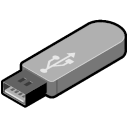

Like Rescuezilla? Then show your support!
- Contribute on Patreon
- Like and review on AlternativeTo.net
Get Rescuezilla
Follow the steps below to create a Rescuezilla USB stick that you can boot your computer from.
Getting Started
1. Download the latest live image
Download the latest version of the Rescuezilla live image from here.
2. Write the image to a USB
You'll need to write the image to a USB using a program such as balenaEtcher which works on Windows, Mac and Linux.
3. Reboot your computer
Rescuezilla does not run from inside Windows or any other operating system because it is one! You must restart your computer with the USB inserted in order to use Rescuezilla. To boot from the USB, you may need to press a key such as F8 or F12 while your computer is starting up.
After the USB boots, you will have a mini operating system loaded into memory which will launch Rescuezilla. It will not install anything to your hard drive, and you decide which hard drive to save backup images.
System Requirements
- PC (Intel/AMD compatible)
- 1GB RAM (2GB recommended)
- USB Drive (faster the better)